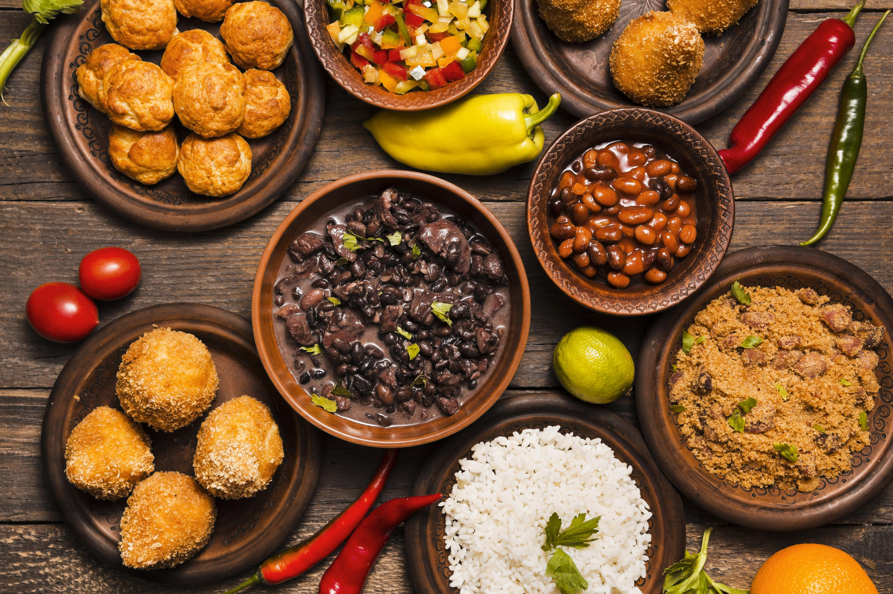
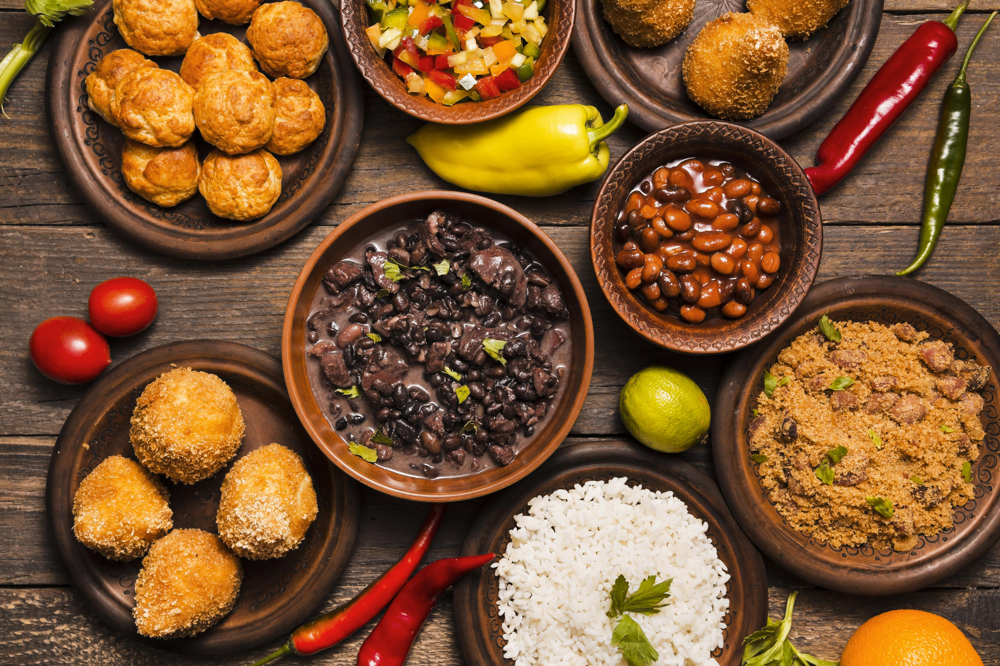
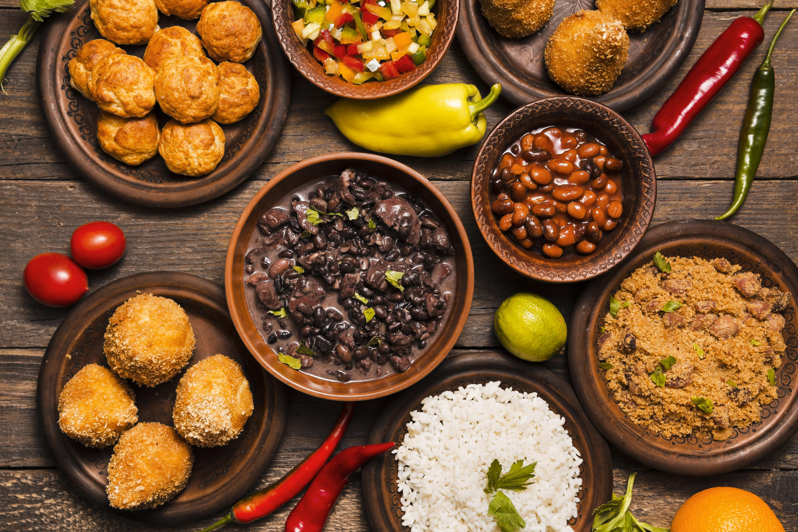

Deliciosas & Sabroso


Receta Para Todos es una página dedicada a compartir recetas de cocina para todos los niveles, desde principiantes hasta cocineros experimentados. Su objetivo es hacer que la cocina sea accesible, divertida y educativa, brindando no solo recetas, sino también herramientas, técnicas, y conocimientos prácticos que permitan a cualquiera preparar deliciosos platillos.